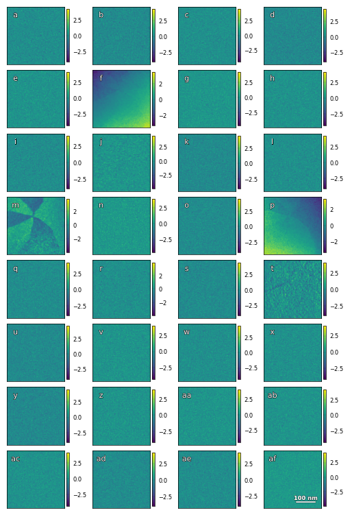
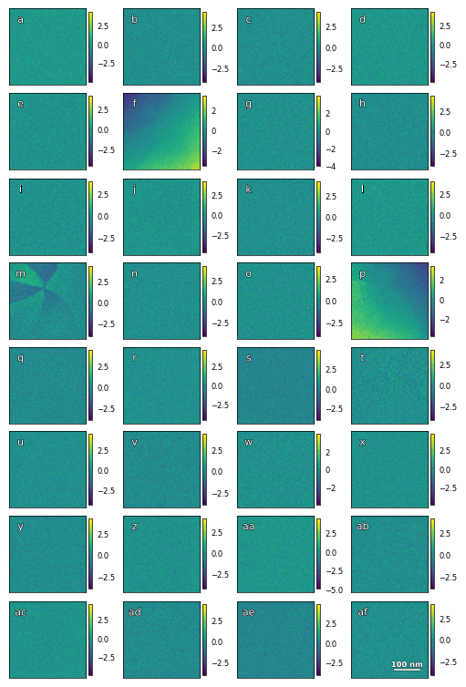
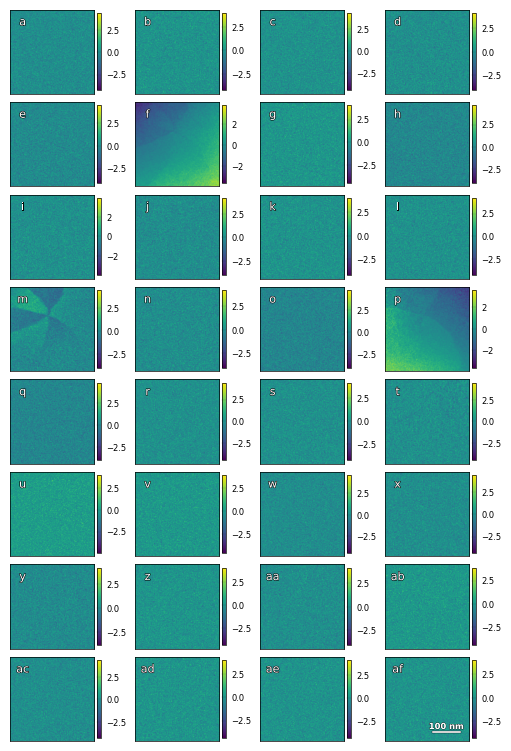
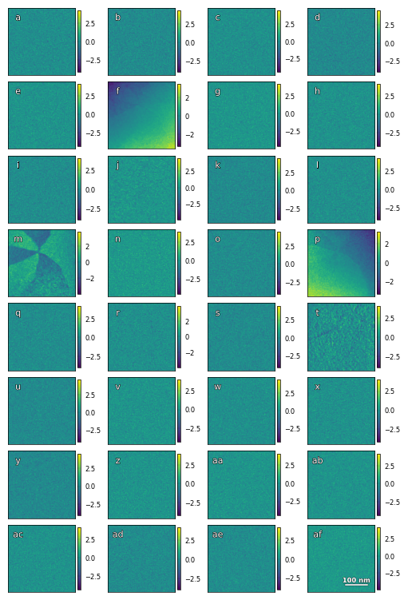
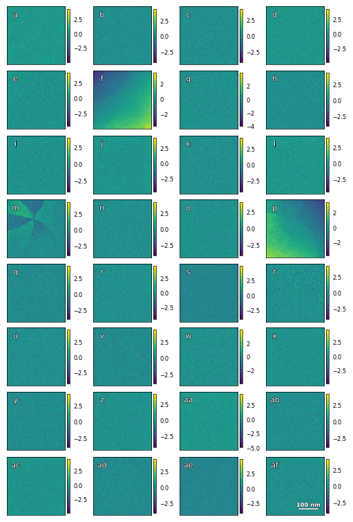
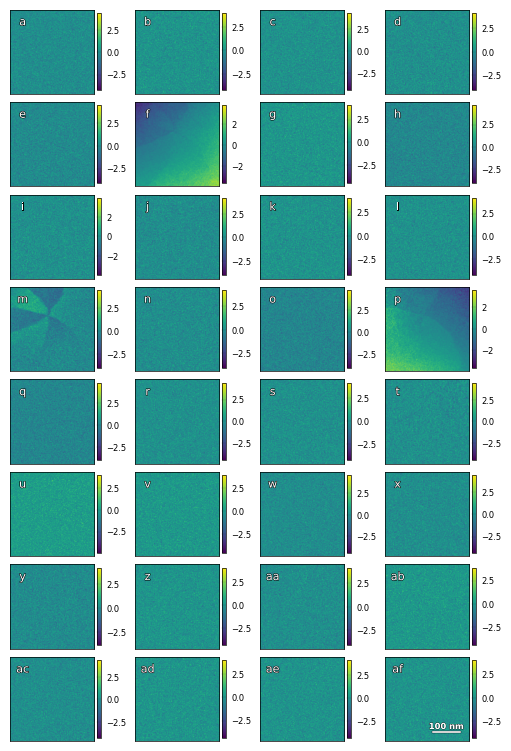

Imaging and structure analysis of ferroelectric domains, domain walls, and vortices by scanning electron diffraction - VAE#
Ursula Ludacka1, Jiali He1, Shuyu Qin3,4, Manuel Zahn1,5, Emil Frang Christiansen2, Kasper A. Hunnestad1, Zewu Yan6,7, Edith Bourret7, István Kézsmárki5, Antonius T. J. van Helvoort2, Joshua Agar3,4, Dennis Meier1
Email: dennis.meier@ntnu.no, jca92@drexel.edu
1 Department of Materials Science and Engineering, NTNU Norwegian University of Science and Technology, Trondheim, Norway
2 Department of Physics, NTNU Norwegian University of Science and Technology, Trondheim, Norway
3 Department of Materials Science and Engineering, Lehigh University, Bethlehem, USA
4 Department of Mechanical Engineering and Mechanics, Drexel University, Philadelphia, USA
5 Experimental Physics V, University of Augsburg, Augsburg, Germany
6 Department of Physics, ETH Zurich, Zürich, Switzerland.
7 Materials Sciences Division, Lawrence Berkeley National Laboratory, Berkeley, USA.
Abstract#
Direct electron detectors in scanning transmission electron microscopy give unprecedented possibilities for structure analysis at the nanoscale. In electronic and quantum materials, this new capability gives access to, for example, emergent chiral structures and symmetry-breaking distortions that underpin functional properties. Quantifying nanoscale structural features with statistical significance, however, is complicated by the subtleties of dynamic diffraction and coexisting contrast mechanisms, which often results in low signal-to-noise and the superposition of multiple signals that are challenging to deconvolute. Here we apply scanning electron diffraction to explore local polar distortions in the uniaxial ferroelectric Er(Mn,Ti)O3. Using a custom-designed convolutional autoencoder with bespoke regularization, we demonstrate that subtle variations in the scattering signatures of ferroelectric domains, domain walls, and vortex textures can readily be disentangled with statistical significance and separated from extrinsic contributions due to, e.g., variations in specimen thickness or bending. The work demonstrates a pathway to quantitatively measure symmetry-breaking distortions across large areas, mapping structural changes at interfaces and topological structures with nanoscale spatial resolution.
Imports and settings#
# !pip install m3_learning
%load_ext autoreload
%autoreload 2
import sys
# if you git-cloned the m3_larning repository, add the location of the src folder to your system path
where_m3_saved = '/home/xinqiao/new_mount/STEM_VAE_for_shuyu'
sys.path.append(f'{where_m3_saved}/m3_learning/m3_learning/src')
import matplotlib.pyplot as plt
import numpy as np
import hyperspy.api as hs
import torch
from m3_learning.nn.random import random_seed
from m3_learning.nn.STEM_AE.Viz import Viz
from m3_learning.nn.STEM_AE.STEM_AE import VariationalAutoencoder
from m3_learning.viz.style import set_style
from m3_learning.viz.printing import printer
from m3_learning.viz.Movies import make_movie
from m3_learning.nn.STEM_AE.Dataset import STEM_Dataset
from m3_learning.util.file_IO import download_and_unzip
# Specify the filename and the path to save the file
save_path = './Data/'
fig_path = save_path.replace("Data", "Figures") + '/'
# builds the printer object
printing = printer(basepath=fig_path,fileformats=['png','svg'])
# Set the style of the plots
set_style("printing")
# Set the random seed for reproducibility
random_seed(seed=42)
%matplotlib inline
---------------------------------------------------------------------------
ModuleNotFoundError Traceback (most recent call last)
Cell In [3], line 6
3 import hyperspy.api as hs
4 import torch
----> 6 from m3_learning.nn.random import random_seed
7 from m3_learning.nn.STEM_AE.Viz import Viz
8 from m3_learning.nn.STEM_AE.STEM_AE import VariationalAutoencoder
ModuleNotFoundError: No module named 'm3_learning'
# # list of files to download from zenodo
# # uncomment this if you need to download the files from zenodo
# files = [
# "11.1_log_epoch_0017_L1loss_0.00181_l1coef_0.0050_lr_0.00009_contrasPara_0.000050_contrasLoss_0.00020_maxiPara_0.00070_maxiLoss_0.0019_trainloss_0.2289.pkl",
# "11.23_log_epoch_0376_coef_1e-05_trainloss_0.1362.pkl",
# "256p_3w_step1k4_a5_cl12_50ms_nmf_4-001.hspy",
# "4.5_log_epoch_0285_L1loss_0.0001__lr_0.00003_trainloss_0.2279.pkl",
# "SED_256x256x12_30x30_alpha3_NBD_spot0p5nm_CL12cm_vortex.hspy",
# ]
# # downloads all the files
# for file in files:
# # Download the data file from Zenodo
# url = f"https://zenodo.org/record/7837986/files/{file}?download=1"
# # download the file
# download_and_unzip(file, url, save_path)
Vortex Domains#
Loads the Dataset#
save_path = './'
# loads the dataset
# this object will also compute the log of the dataset
# this is available as self.log_data
vortex = STEM_Dataset(
data_path=f"{save_path}/SED_256x256x12_30x30_alpha3_NBD_spot0p5nm_CL12cm_vortex.hspy"
)
WARNING:hyperspy.io:This file contains a signal provided by the pyxem Python package that is not currently installed. The signal will be loaded into a generic HyperSpy signal. Consider installing pyxem to load this dataset into its original signal class.
WARNING:hyperspy.io:`signal_type='electron_diffraction'` not understood. See `hs.print_known_signal_types()` for a list of installed signal types or https://github.com/hyperspy/hyperspy-extensions-list for the list of all hyperspy extensions providing signals.
/home/xinqiao/anaconda3/envs/m3/lib/python3.9/site-packages/hyperspy/misc/utils.py:471: VisibleDeprecationWarning: Use of the `binned` attribute in metadata is going to be deprecated in v2.0. Set the `axis.is_binned` attribute instead.
warnings.warn(
/home/xinqiao/anaconda3/envs/m3/lib/python3.9/site-packages/hyperspy/io.py:572: VisibleDeprecationWarning: Loading old file version. The binned attribute has been moved from metadata.Signal to axis.is_binned. Setting this attribute for all signal axes instead.
warnings.warn('Loading old file version. The binned attribute '
Instantiates the Visualizer#
# instantiates the visualization class
viz = Viz(printer=printing, labelfigs_=True)
viz.scalebar_ = {"width": 250, "scale length": 100, "units": "nm", "channel": -1}
Visualizes the Raw Data#
# bright_field_ = (150, 162, 152, 165)
# dark_field_ = (106, 123, 110, 125)
# filename = "STEM_raw_and_virtual_vortex_domains"
# viz.scalebar_ = {"width": 291, "scale length": 100, "units": "nm"}
# viz.STEM_raw_and_virtual(
# vortex,
# bright_field_=bright_field_,
# dark_field_=dark_field_,
# scalebar_=True,
# filename=filename,
# shape_=vortex.data.shape,
# )
Builds the Neural Network Model#
encoder_step_size = [256, 256]
pooling_list = [4, 4, 2]
decoder_step_size = [8, 8]
upsampling_list = [2, 4, 4]
embedding_size = 32
conv_size = 128
checkpoints_folder = 'vortex_VAE_Weights_1'
# set device to load model
device = "cpu"
if torch.cuda.is_available():
device = "cuda:0"
model = VariationalAutoencoder(
encoder_step_size=encoder_step_size,
pooling_list=pooling_list,
decoder_step_size=decoder_step_size,
upsampling_list=upsampling_list,
embedding_size=embedding_size,
conv_size=conv_size,
device=device,
learning_rate=3e-5,
)
Trains or Loads Pretrained Weights#
In this model we generate a mean and standard deviation in the embedding to generate a normal distribution. The samples values pass through the decoder. Introducing this distribution should theoretically allow the model to be more robust with noise.
Additionally, we calculate the KL-divergence divergence of the embedding distributions scale it with a \(\beta\) term to add to the loss function, shown below. This should $\( \mathbf{kl\_loss} = \beta \sum_{i=0}^{n} \frac{\sigma_i - \mu_i^2 - e^{\sigma_i}+ 1}{2n} \)$
# set retrain parameter
# manually change beta if you incremented it
train = True
if train:
model.Train(
vortex.log_data,
epochs=30,
with_scheduler=False,
folder_path=checkpoints_folder,
batch_size=16,
beta=0,
beta_schedule=[5e-4,1]
)
else:
model.load_weights(
f'{save_path}/{checkpoints_folder}/Weight_epoch:0000_l1coef:0.0000_lr:0.00003_trainloss:0.7364.pkl'
)
0%| | 0/4096 [00:00<?, ?it/s]
100%|██████████| 4096/4096 [41:41<00:00, 1.64it/s]
Epoch: 000/030 | Train Loss: 0.7382
.............................
100%|██████████| 4096/4096 [41:41<00:00, 1.64it/s]
Epoch: 001/030 | Train Loss: 0.7314
.............................
100%|██████████| 4096/4096 [41:45<00:00, 1.63it/s]
Epoch: 002/030 | Train Loss: 0.7312
.............................
100%|██████████| 4096/4096 [41:43<00:00, 1.64it/s]
Epoch: 003/030 | Train Loss: 0.7310
.............................
100%|██████████| 4096/4096 [41:43<00:00, 1.64it/s]
Epoch: 004/030 | Train Loss: 0.7308
.............................
100%|██████████| 4096/4096 [41:42<00:00, 1.64it/s]
Epoch: 005/030 | Train Loss: 0.7307
.............................
100%|██████████| 4096/4096 [41:42<00:00, 1.64it/s]
Epoch: 006/030 | Train Loss: 0.7307
.............................
100%|██████████| 4096/4096 [41:41<00:00, 1.64it/s]
Epoch: 007/030 | Train Loss: 0.7307
.............................
100%|██████████| 4096/4096 [41:42<00:00, 1.64it/s]
Epoch: 008/030 | Train Loss: 0.7307
.............................
100%|██████████| 4096/4096 [41:42<00:00, 1.64it/s]
Epoch: 009/030 | Train Loss: 0.7308
.............................
100%|██████████| 4096/4096 [41:43<00:00, 1.64it/s]
Epoch: 010/030 | Train Loss: 0.7308
.............................
100%|██████████| 4096/4096 [41:42<00:00, 1.64it/s]
Epoch: 011/030 | Train Loss: 0.7309
.............................
100%|██████████| 4096/4096 [41:42<00:00, 1.64it/s]
Epoch: 012/030 | Train Loss: 0.7309
.............................
100%|██████████| 4096/4096 [41:42<00:00, 1.64it/s]
Epoch: 013/030 | Train Loss: 0.7310
.............................
100%|██████████| 4096/4096 [41:42<00:00, 1.64it/s]
Epoch: 014/030 | Train Loss: 0.7310
.............................
100%|██████████| 4096/4096 [41:43<00:00, 1.64it/s]
Epoch: 015/030 | Train Loss: 0.7311
.............................
100%|██████████| 4096/4096 [41:43<00:00, 1.64it/s]
Epoch: 016/030 | Train Loss: 0.7312
.............................
100%|██████████| 4096/4096 [41:43<00:00, 1.64it/s]
Epoch: 017/030 | Train Loss: 0.7312
.............................
100%|██████████| 4096/4096 [41:43<00:00, 1.64it/s]
Epoch: 018/030 | Train Loss: 0.7313
.............................
100%|██████████| 4096/4096 [41:43<00:00, 1.64it/s]
Epoch: 019/030 | Train Loss: 0.7313
.............................
100%|██████████| 4096/4096 [41:43<00:00, 1.64it/s]
Epoch: 020/030 | Train Loss: 0.7313
.............................
100%|██████████| 4096/4096 [41:42<00:00, 1.64it/s]
Epoch: 021/030 | Train Loss: 0.7314
.............................
100%|██████████| 4096/4096 [41:43<00:00, 1.64it/s]
Epoch: 022/030 | Train Loss: 0.7314
.............................
100%|██████████| 4096/4096 [41:42<00:00, 1.64it/s]
Epoch: 023/030 | Train Loss: 0.7315
.............................
100%|██████████| 4096/4096 [41:43<00:00, 1.64it/s]
Epoch: 024/030 | Train Loss: 0.7315
.............................
100%|██████████| 4096/4096 [41:44<00:00, 1.64it/s]
Epoch: 025/030 | Train Loss: 0.7316
.............................
100%|██████████| 4096/4096 [41:47<00:00, 1.63it/s]
Epoch: 026/030 | Train Loss: 0.7316
.............................
100%|██████████| 4096/4096 [41:44<00:00, 1.64it/s]
Epoch: 027/030 | Train Loss: 0.7317
.............................
31%|███ | 1265/4096 [12:53<28:51, 1.63it/s]
---------------------------------------------------------------------------
KeyboardInterrupt Traceback (most recent call last)
/home/xinqiao/new_mount/STEM_VAE_for_shuyu/m3_learning/m3_learning/papers/2023_Imaging_ferroelectric_domains_by_scanning_electron_diffraction/STEM_vortex_VAE.ipynb Cell 20 line 5
<a href='vscode-notebook-cell:/home/xinqiao/new_mount/STEM_VAE_for_shuyu/m3_learning/m3_learning/papers/2023_Imaging_ferroelectric_domains_by_scanning_electron_diffraction/STEM_vortex_VAE.ipynb#X23sZmlsZQ%3D%3D?line=2'>3</a> train = True
<a href='vscode-notebook-cell:/home/xinqiao/new_mount/STEM_VAE_for_shuyu/m3_learning/m3_learning/papers/2023_Imaging_ferroelectric_domains_by_scanning_electron_diffraction/STEM_vortex_VAE.ipynb#X23sZmlsZQ%3D%3D?line=3'>4</a> if train:
----> <a href='vscode-notebook-cell:/home/xinqiao/new_mount/STEM_VAE_for_shuyu/m3_learning/m3_learning/papers/2023_Imaging_ferroelectric_domains_by_scanning_electron_diffraction/STEM_vortex_VAE.ipynb#X23sZmlsZQ%3D%3D?line=4'>5</a> model.Train(
<a href='vscode-notebook-cell:/home/xinqiao/new_mount/STEM_VAE_for_shuyu/m3_learning/m3_learning/papers/2023_Imaging_ferroelectric_domains_by_scanning_electron_diffraction/STEM_vortex_VAE.ipynb#X23sZmlsZQ%3D%3D?line=5'>6</a> vortex.log_data,
<a href='vscode-notebook-cell:/home/xinqiao/new_mount/STEM_VAE_for_shuyu/m3_learning/m3_learning/papers/2023_Imaging_ferroelectric_domains_by_scanning_electron_diffraction/STEM_vortex_VAE.ipynb#X23sZmlsZQ%3D%3D?line=6'>7</a> epochs=30,
<a href='vscode-notebook-cell:/home/xinqiao/new_mount/STEM_VAE_for_shuyu/m3_learning/m3_learning/papers/2023_Imaging_ferroelectric_domains_by_scanning_electron_diffraction/STEM_vortex_VAE.ipynb#X23sZmlsZQ%3D%3D?line=7'>8</a> with_scheduler=False,
<a href='vscode-notebook-cell:/home/xinqiao/new_mount/STEM_VAE_for_shuyu/m3_learning/m3_learning/papers/2023_Imaging_ferroelectric_domains_by_scanning_electron_diffraction/STEM_vortex_VAE.ipynb#X23sZmlsZQ%3D%3D?line=8'>9</a> folder_path=checkpoints_folder,
<a href='vscode-notebook-cell:/home/xinqiao/new_mount/STEM_VAE_for_shuyu/m3_learning/m3_learning/papers/2023_Imaging_ferroelectric_domains_by_scanning_electron_diffraction/STEM_vortex_VAE.ipynb#X23sZmlsZQ%3D%3D?line=9'>10</a> batch_size=16,
<a href='vscode-notebook-cell:/home/xinqiao/new_mount/STEM_VAE_for_shuyu/m3_learning/m3_learning/papers/2023_Imaging_ferroelectric_domains_by_scanning_electron_diffraction/STEM_vortex_VAE.ipynb#X23sZmlsZQ%3D%3D?line=10'>11</a> beta=0,
<a href='vscode-notebook-cell:/home/xinqiao/new_mount/STEM_VAE_for_shuyu/m3_learning/m3_learning/papers/2023_Imaging_ferroelectric_domains_by_scanning_electron_diffraction/STEM_vortex_VAE.ipynb#X23sZmlsZQ%3D%3D?line=11'>12</a> beta_schedule=[5e-4,1]
<a href='vscode-notebook-cell:/home/xinqiao/new_mount/STEM_VAE_for_shuyu/m3_learning/m3_learning/papers/2023_Imaging_ferroelectric_domains_by_scanning_electron_diffraction/STEM_vortex_VAE.ipynb#X23sZmlsZQ%3D%3D?line=12'>13</a> )
<a href='vscode-notebook-cell:/home/xinqiao/new_mount/STEM_VAE_for_shuyu/m3_learning/m3_learning/papers/2023_Imaging_ferroelectric_domains_by_scanning_electron_diffraction/STEM_vortex_VAE.ipynb#X23sZmlsZQ%3D%3D?line=14'>15</a> else:
<a href='vscode-notebook-cell:/home/xinqiao/new_mount/STEM_VAE_for_shuyu/m3_learning/m3_learning/papers/2023_Imaging_ferroelectric_domains_by_scanning_electron_diffraction/STEM_vortex_VAE.ipynb#X23sZmlsZQ%3D%3D?line=15'>16</a> model.load_weights(
<a href='vscode-notebook-cell:/home/xinqiao/new_mount/STEM_VAE_for_shuyu/m3_learning/m3_learning/papers/2023_Imaging_ferroelectric_domains_by_scanning_electron_diffraction/STEM_vortex_VAE.ipynb#X23sZmlsZQ%3D%3D?line=16'>17</a> f'{save_path}/{checkpoints_folder}/Weight_epoch:0000_l1coef:0.0000_lr:0.00003_trainloss:0.7364.pkl'
<a href='vscode-notebook-cell:/home/xinqiao/new_mount/STEM_VAE_for_shuyu/m3_learning/m3_learning/papers/2023_Imaging_ferroelectric_domains_by_scanning_electron_diffraction/STEM_vortex_VAE.ipynb#X23sZmlsZQ%3D%3D?line=17'>18</a> )
File ~/new_mount/STEM_VAE_for_shuyu/m3_learning/m3_learning/src/m3_learning/nn/STEM_AE/STEM_AE.py:488, in VariationalAutoencoder.Train(self, data, max_learning_rate, coef_1, coef_2, coef_3, beta, beta_schedule, seed, epochs, with_scheduler, ln_parm, epoch_, folder_path, batch_size, best_train_loss)
485 if beta_schedule != [0,0]:
486 if epoch%beta_schedule[1]==0: beta+=beta_schedule[0]
--> 488 train = self.loss_function(self.DataLoader_, coef_1, coef_2, coef_3, ln_parm,beta)
489 train_loss = train
490 train_loss /= len(self.DataLoader_)
File ~/new_mount/STEM_VAE_for_shuyu/m3_learning/m3_learning/src/m3_learning/nn/STEM_AE/STEM_AE.py:412, in VariationalAutoencoder.loss_function(self, train_iterator, coef, coef1, coef2, ln_parm, beta)
409 loss = loss + reg_loss_1 + contras_loss - maxi_loss + beta*kl_loss
411 # backward pass
--> 412 train_loss += loss.item()
413 loss.backward()
414 # update the weights
KeyboardInterrupt:
embedding = model.get_embedding(vortex.log_data,batch_size=16)
Show code cell output
100%|██████████| 4096/4096 [05:47<00:00, 11.78it/s]
Computes embeddings for all checkpoints in a folder, and writes to h5 file in the folder#
model.write_multi_embeddings(input_folder = checkpoints_folder,
output_folder = checkpoints_folder,
input_data = vortex.log_data,
output_filename = 'embeddings.h5',
batch_size=16,
overwrite=True)
Weight_epoch:0000_l1coef:0.0000_lr:0.00003_trainloss:0.7382
100%|██████████| 2048/2048 [05:47<00:00, 5.89it/s]
Weight_epoch:0001_l1coef:0.0000_lr:0.00003_trainloss:0.7314
100%|██████████| 2048/2048 [05:48<00:00, 5.88it/s]
Weight_epoch:0002_l1coef:0.0000_lr:0.00003_trainloss:0.7312
100%|██████████| 2048/2048 [05:48<00:00, 5.88it/s]
Weight_epoch:0003_l1coef:0.0000_lr:0.00003_trainloss:0.7310
100%|██████████| 2048/2048 [05:48<00:00, 5.88it/s]
Weight_epoch:0004_l1coef:0.0000_lr:0.00003_trainloss:0.7308
100%|██████████| 2048/2048 [05:48<00:00, 5.88it/s]
Weight_epoch:0005_l1coef:0.0000_lr:0.00003_trainloss:0.7307
100%|██████████| 2048/2048 [05:48<00:00, 5.88it/s]
Weight_epoch:0006_l1coef:0.0000_lr:0.00003_trainloss:0.7307
100%|██████████| 2048/2048 [05:48<00:00, 5.88it/s]
Weight_epoch:0007_l1coef:0.0000_lr:0.00003_trainloss:0.7307
100%|██████████| 2048/2048 [05:48<00:00, 5.88it/s]
Weight_epoch:0008_l1coef:0.0000_lr:0.00003_trainloss:0.7307
100%|██████████| 2048/2048 [05:48<00:00, 5.88it/s]
Weight_epoch:0009_l1coef:0.0000_lr:0.00003_trainloss:0.7308
100%|██████████| 2048/2048 [05:48<00:00, 5.88it/s]
Weight_epoch:0010_l1coef:0.0000_lr:0.00003_trainloss:0.7308
100%|██████████| 2048/2048 [05:48<00:00, 5.88it/s]
Weight_epoch:0011_l1coef:0.0000_lr:0.00003_trainloss:0.7309
100%|██████████| 2048/2048 [05:48<00:00, 5.88it/s]
Weight_epoch:0012_l1coef:0.0000_lr:0.00003_trainloss:0.7309
100%|██████████| 2048/2048 [05:48<00:00, 5.88it/s]
Weight_epoch:0013_l1coef:0.0000_lr:0.00003_trainloss:0.7310
100%|██████████| 2048/2048 [05:48<00:00, 5.88it/s]
Weight_epoch:0014_l1coef:0.0000_lr:0.00003_trainloss:0.7310
100%|██████████| 2048/2048 [05:48<00:00, 5.88it/s]
Weight_epoch:0015_l1coef:0.0000_lr:0.00003_trainloss:0.7311
100%|██████████| 2048/2048 [05:48<00:00, 5.88it/s]
Weight_epoch:0016_l1coef:0.0000_lr:0.00003_trainloss:0.7312
100%|██████████| 2048/2048 [05:48<00:00, 5.88it/s]
Weight_epoch:0017_l1coef:0.0000_lr:0.00003_trainloss:0.7312
100%|██████████| 2048/2048 [05:48<00:00, 5.88it/s]
Weight_epoch:0018_l1coef:0.0000_lr:0.00003_trainloss:0.7313
100%|██████████| 2048/2048 [05:48<00:00, 5.88it/s]
Weight_epoch:0019_l1coef:0.0000_lr:0.00003_trainloss:0.7313
100%|██████████| 2048/2048 [05:48<00:00, 5.88it/s]
Weight_epoch:0020_l1coef:0.0000_lr:0.00003_trainloss:0.7313
100%|██████████| 2048/2048 [05:48<00:00, 5.88it/s]
Weight_epoch:0021_l1coef:0.0000_lr:0.00003_trainloss:0.7314
100%|██████████| 2048/2048 [05:48<00:00, 5.88it/s]
Weight_epoch:0022_l1coef:0.0000_lr:0.00003_trainloss:0.7314
100%|██████████| 2048/2048 [05:48<00:00, 5.88it/s]
Weight_epoch:0023_l1coef:0.0000_lr:0.00003_trainloss:0.7315
100%|██████████| 2048/2048 [05:48<00:00, 5.88it/s]
Weight_epoch:0024_l1coef:0.0000_lr:0.00003_trainloss:0.7315
100%|██████████| 2048/2048 [05:48<00:00, 5.88it/s]
Weight_epoch:0025_l1coef:0.0000_lr:0.00003_trainloss:0.7316
100%|██████████| 2048/2048 [05:48<00:00, 5.88it/s]
Weight_epoch:0026_l1coef:0.0000_lr:0.00003_trainloss:0.7316
100%|██████████| 2048/2048 [05:48<00:00, 5.88it/s]
Weight_epoch:0027_l1coef:0.0000_lr:0.00003_trainloss:0.7317
100%|██████████| 2048/2048 [05:48<00:00, 5.88it/s]
Visualizes current model Embedding#
viz.channels = None
viz.scalebar_ = {"width": 250, "scale length": 100, "units": "nm"}
viz.model = model
viz.embeddings(
mod=4,
scalebar_=viz.scalebar_,
name="vortex_VAE_1",
shape_=vortex.data.shape,
figsize=(5, 8),
)
.//vortex_VAE_embedding_maps.png
Visualize all embeddings in embedding h5 file#
viz.model = model
viz.channels = None
viz.scalebar_ = {"width": 291, "scale length": 100, "units": "nm"}
viz.multi_embeddings(
h5_filename = f'{checkpoints_folder}/embeddings.h5',
mod=4,
scalebar_=viz.scalebar_,
figsize=(5, 8),
shape_=vortex.data.shape,
output_folder='VAE_embeddings_by_beta'
)
./Figures//VAE_embeddings_by_beta/ep_0_beta_0.0005_embedding_maps.png
./Figures//VAE_embeddings_by_beta/ep_0_beta_0.0005_embedding_maps.svg
./Figures//VAE_embeddings_by_beta/ep_1_beta_0.001_embedding_maps.png
./Figures//VAE_embeddings_by_beta/ep_1_beta_0.001_embedding_maps.svg
./Figures//VAE_embeddings_by_beta/ep_2_beta_0.0015_embedding_maps.png
./Figures//VAE_embeddings_by_beta/ep_2_beta_0.0015_embedding_maps.svg
./Figures//VAE_embeddings_by_beta/ep_3_beta_0.002_embedding_maps.png
./Figures//VAE_embeddings_by_beta/ep_3_beta_0.002_embedding_maps.svg
./Figures//VAE_embeddings_by_beta/ep_4_beta_0.0025_embedding_maps.png
./Figures//VAE_embeddings_by_beta/ep_4_beta_0.0025_embedding_maps.svg
./Figures//VAE_embeddings_by_beta/ep_5_beta_0.003_embedding_maps.png
./Figures//VAE_embeddings_by_beta/ep_5_beta_0.003_embedding_maps.svg
./Figures//VAE_embeddings_by_beta/ep_6_beta_0.0035_embedding_maps.png
./Figures//VAE_embeddings_by_beta/ep_6_beta_0.0035_embedding_maps.svg
./Figures//VAE_embeddings_by_beta/ep_7_beta_0.004_embedding_maps.png
./Figures//VAE_embeddings_by_beta/ep_7_beta_0.004_embedding_maps.svg
./Figures//VAE_embeddings_by_beta/ep_8_beta_0.0045000000000000005_embedding_maps.png
./Figures//VAE_embeddings_by_beta/ep_8_beta_0.0045000000000000005_embedding_maps.svg
./Figures//VAE_embeddings_by_beta/ep_9_beta_0.005000000000000001_embedding_maps.png
./Figures//VAE_embeddings_by_beta/ep_9_beta_0.005000000000000001_embedding_maps.svg
./Figures//VAE_embeddings_by_beta/ep_10_beta_0.005500000000000001_embedding_maps.png
./Figures//VAE_embeddings_by_beta/ep_10_beta_0.005500000000000001_embedding_maps.svg
./Figures//VAE_embeddings_by_beta/ep_11_beta_0.006000000000000002_embedding_maps.png
./Figures//VAE_embeddings_by_beta/ep_11_beta_0.006000000000000002_embedding_maps.svg
./Figures//VAE_embeddings_by_beta/ep_12_beta_0.006500000000000002_embedding_maps.png
./Figures//VAE_embeddings_by_beta/ep_12_beta_0.006500000000000002_embedding_maps.svg
./Figures//VAE_embeddings_by_beta/ep_13_beta_0.007000000000000003_embedding_maps.png
./Figures//VAE_embeddings_by_beta/ep_13_beta_0.007000000000000003_embedding_maps.svg
./Figures//VAE_embeddings_by_beta/ep_14_beta_0.007500000000000003_embedding_maps.png
./Figures//VAE_embeddings_by_beta/ep_14_beta_0.007500000000000003_embedding_maps.svg
./Figures//VAE_embeddings_by_beta/ep_15_beta_0.008000000000000004_embedding_maps.png
./Figures//VAE_embeddings_by_beta/ep_15_beta_0.008000000000000004_embedding_maps.svg
./Figures//VAE_embeddings_by_beta/ep_16_beta_0.008500000000000004_embedding_maps.png
./Figures//VAE_embeddings_by_beta/ep_16_beta_0.008500000000000004_embedding_maps.svg
./Figures//VAE_embeddings_by_beta/ep_17_beta_0.009000000000000005_embedding_maps.png
./Figures//VAE_embeddings_by_beta/ep_17_beta_0.009000000000000005_embedding_maps.svg
./Figures//VAE_embeddings_by_beta/ep_18_beta_0.009500000000000005_embedding_maps.png
./Figures//VAE_embeddings_by_beta/ep_18_beta_0.009500000000000005_embedding_maps.svg
./Figures//VAE_embeddings_by_beta/ep_19_beta_0.010000000000000005_embedding_maps.png
./Figures//VAE_embeddings_by_beta/ep_19_beta_0.010000000000000005_embedding_maps.svg
/home/xinqiao/new_mount/STEM_VAE_for_shuyu/m3_learning/m3_learning/src/m3_learning/viz/layout.py:171: RuntimeWarning: More than 20 figures have been opened. Figures created through the pyplot interface (`matplotlib.pyplot.figure`) are retained until explicitly closed and may consume too much memory. (To control this warning, see the rcParam `figure.max_open_warning`). Consider using `matplotlib.pyplot.close()`.
fig, axes = plt.subplots(
./Figures//VAE_embeddings_by_beta/ep_20_beta_0.010500000000000006_embedding_maps.png
./Figures//VAE_embeddings_by_beta/ep_20_beta_0.010500000000000006_embedding_maps.svg
./Figures//VAE_embeddings_by_beta/ep_21_beta_0.011000000000000006_embedding_maps.png
./Figures//VAE_embeddings_by_beta/ep_21_beta_0.011000000000000006_embedding_maps.svg
./Figures//VAE_embeddings_by_beta/ep_22_beta_0.011500000000000007_embedding_maps.png
./Figures//VAE_embeddings_by_beta/ep_22_beta_0.011500000000000007_embedding_maps.svg
./Figures//VAE_embeddings_by_beta/ep_23_beta_0.012000000000000007_embedding_maps.png
./Figures//VAE_embeddings_by_beta/ep_23_beta_0.012000000000000007_embedding_maps.svg
./Figures//VAE_embeddings_by_beta/ep_24_beta_0.012500000000000008_embedding_maps.png
./Figures//VAE_embeddings_by_beta/ep_24_beta_0.012500000000000008_embedding_maps.svg
./Figures//VAE_embeddings_by_beta/ep_25_beta_0.013000000000000008_embedding_maps.png
./Figures//VAE_embeddings_by_beta/ep_25_beta_0.013000000000000008_embedding_maps.svg
./Figures//VAE_embeddings_by_beta/ep_26_beta_0.013500000000000009_embedding_maps.png
./Figures//VAE_embeddings_by_beta/ep_26_beta_0.013500000000000009_embedding_maps.svg
./Figures//VAE_embeddings_by_beta/ep_27_beta_0.014000000000000009_embedding_maps.png
./Figures//VAE_embeddings_by_beta/ep_27_beta_0.014000000000000009_embedding_maps.svg

 





Creates embedding movies through beta schueduling#
# Builds a Movie
folder = f"{fig_path}/VAE_embeddings_by_beta/"
output_folder = "./movies_by_beta/"
# function to make the movie
make_movie('VAE_embeddings_by_beta',
folder, "./movies/",
'png', 3, text_list=True)
0%| | 0/28 [00:00<?, ?it/s]
100%|██████████| 28/28 [00:11<00:00, 2.53it/s]
Generates diffraction pattern from all Zeros, through beta scheduling#
viz.multi_generate_from_zero(input_folder = f'./{checkpoints_folder}')
Weight_epoch:0000_l1coef:0.0000_lr:0.00003_trainloss:0.7382
./Figures//generated0/Ep_0_beta_0.0005.png
./Figures//generated0/Ep_0_beta_0.0005.svg
Weight_epoch:0001_l1coef:0.0000_lr:0.00003_trainloss:0.7314
./Figures//generated0/Ep_1_beta_0.0010.png
./Figures//generated0/Ep_1_beta_0.0010.svg
Weight_epoch:0002_l1coef:0.0000_lr:0.00003_trainloss:0.7312
./Figures//generated0/Ep_2_beta_0.0015.png
./Figures//generated0/Ep_2_beta_0.0015.svg
Weight_epoch:0003_l1coef:0.0000_lr:0.00003_trainloss:0.7310
./Figures//generated0/Ep_3_beta_0.0020.png
./Figures//generated0/Ep_3_beta_0.0020.svg
Weight_epoch:0004_l1coef:0.0000_lr:0.00003_trainloss:0.7308
./Figures//generated0/Ep_4_beta_0.0025.png
./Figures//generated0/Ep_4_beta_0.0025.svg
Weight_epoch:0005_l1coef:0.0000_lr:0.00003_trainloss:0.7307
./Figures//generated0/Ep_5_beta_0.0030.png
./Figures//generated0/Ep_5_beta_0.0030.svg
Weight_epoch:0006_l1coef:0.0000_lr:0.00003_trainloss:0.7307
./Figures//generated0/Ep_6_beta_0.0035.png
./Figures//generated0/Ep_6_beta_0.0035.svg
Weight_epoch:0007_l1coef:0.0000_lr:0.00003_trainloss:0.7307
./Figures//generated0/Ep_7_beta_0.0040.png
./Figures//generated0/Ep_7_beta_0.0040.svg
Weight_epoch:0008_l1coef:0.0000_lr:0.00003_trainloss:0.7307
./Figures//generated0/Ep_8_beta_0.0045.png
./Figures//generated0/Ep_8_beta_0.0045.svg
Weight_epoch:0009_l1coef:0.0000_lr:0.00003_trainloss:0.7308
./Figures//generated0/Ep_9_beta_0.0050.png
./Figures//generated0/Ep_9_beta_0.0050.svg
Weight_epoch:0010_l1coef:0.0000_lr:0.00003_trainloss:0.7308
./Figures//generated0/Ep_10_beta_0.0055.png
./Figures//generated0/Ep_10_beta_0.0055.svg
Weight_epoch:0011_l1coef:0.0000_lr:0.00003_trainloss:0.7309
./Figures//generated0/Ep_11_beta_0.0060.png
./Figures//generated0/Ep_11_beta_0.0060.svg
Weight_epoch:0012_l1coef:0.0000_lr:0.00003_trainloss:0.7309
./Figures//generated0/Ep_12_beta_0.0065.png
./Figures//generated0/Ep_12_beta_0.0065.svg
Weight_epoch:0013_l1coef:0.0000_lr:0.00003_trainloss:0.7310
./Figures//generated0/Ep_13_beta_0.0070.png
./Figures//generated0/Ep_13_beta_0.0070.svg
Weight_epoch:0014_l1coef:0.0000_lr:0.00003_trainloss:0.7310
./Figures//generated0/Ep_14_beta_0.0075.png
./Figures//generated0/Ep_14_beta_0.0075.svg
Weight_epoch:0015_l1coef:0.0000_lr:0.00003_trainloss:0.7311
./Figures//generated0/Ep_15_beta_0.0080.png
./Figures//generated0/Ep_15_beta_0.0080.svg
Weight_epoch:0016_l1coef:0.0000_lr:0.00003_trainloss:0.7312
./Figures//generated0/Ep_16_beta_0.0085.png
./Figures//generated0/Ep_16_beta_0.0085.svg
Weight_epoch:0017_l1coef:0.0000_lr:0.00003_trainloss:0.7312
./Figures//generated0/Ep_17_beta_0.0090.png
./Figures//generated0/Ep_17_beta_0.0090.svg
Weight_epoch:0018_l1coef:0.0000_lr:0.00003_trainloss:0.7313
./Figures//generated0/Ep_18_beta_0.0095.png
./Figures//generated0/Ep_18_beta_0.0095.svg
Weight_epoch:0019_l1coef:0.0000_lr:0.00003_trainloss:0.7313
./Figures//generated0/Ep_19_beta_0.0100.png
./Figures//generated0/Ep_19_beta_0.0100.svg
Weight_epoch:0020_l1coef:0.0000_lr:0.00003_trainloss:0.7313
./Figures//generated0/Ep_20_beta_0.0105.png
/home/xinqiao/new_mount/STEM_VAE_for_shuyu/m3_learning/m3_learning/src/m3_learning/nn/STEM_AE/Viz.py:314: RuntimeWarning: More than 20 figures have been opened. Figures created through the pyplot interface (`matplotlib.pyplot.figure`) are retained until explicitly closed and may consume too much memory. (To control this warning, see the rcParam `figure.max_open_warning`). Consider using `matplotlib.pyplot.close()`.
fig1,ax1 = plt.subplots(1,figsize=(4,4))
./Figures//generated0/Ep_20_beta_0.0105.svg
Weight_epoch:0021_l1coef:0.0000_lr:0.00003_trainloss:0.7314
./Figures//generated0/Ep_21_beta_0.0110.png
./Figures//generated0/Ep_21_beta_0.0110.svg
Weight_epoch:0022_l1coef:0.0000_lr:0.00003_trainloss:0.7314
./Figures//generated0/Ep_22_beta_0.0115.png
./Figures//generated0/Ep_22_beta_0.0115.svg
Weight_epoch:0023_l1coef:0.0000_lr:0.00003_trainloss:0.7315
./Figures//generated0/Ep_23_beta_0.0120.png
./Figures//generated0/Ep_23_beta_0.0120.svg
Weight_epoch:0024_l1coef:0.0000_lr:0.00003_trainloss:0.7315
./Figures//generated0/Ep_24_beta_0.0125.png
./Figures//generated0/Ep_24_beta_0.0125.svg
Weight_epoch:0025_l1coef:0.0000_lr:0.00003_trainloss:0.7316
./Figures//generated0/Ep_25_beta_0.0130.png
./Figures//generated0/Ep_25_beta_0.0130.svg
Weight_epoch:0026_l1coef:0.0000_lr:0.00003_trainloss:0.7316
./Figures//generated0/Ep_26_beta_0.0135.png
./Figures//generated0/Ep_26_beta_0.0135.svg
Weight_epoch:0027_l1coef:0.0000_lr:0.00003_trainloss:0.7317
./Figures//generated0/Ep_27_beta_0.0140.png
./Figures//generated0/Ep_27_beta_0.0140.svg
# Builds a Movie
folder = f"{fig_path}/generated0/"
output_folder = "./movies/"
# function to make the movie
make_movie("Vortex Domains Generated from 0_1", folder, output_folder, "png", 3,
text_list=True)
100%|██████████| 29/29 [00:01<00:00, 22.30it/s]
Generates Data from the Latent Space#
viz.model = model
viz.channels = list(np.arange(32))
# Make sure to load the correct checkpoint before generating images
model.load_weights(
f"{save_path}/vortex_VAE_Weights_1/Weight_epoch:0027_l1coef:0.0000_lr:0.00003_trainloss:0.7317.pkl",
embedding_h5_filepath=f'{save_path}/{checkpoints_folder}/embeddings_test.h5'
)
viz.generator_images(
folder_name='vortex_VAE_by_beta',
figsize=(8,4),
graph_layout=[32,8],
cbar_number_format="%d",
shape_=vortex.data.shape,
divider_=False,
)
Show code cell output
"Unable to open object (object 'Weight_epoch:0027_l1coef:0.0000_lr:0.00003_trainloss:0.7317' doesn't exist)"
Embedding not set
0%| | 0/200 [00:00<?, ?it/s]
./Figures//generator_images_vortex_VAE_by_beta/0000_maps.png
./Figures//generator_images_vortex_VAE_by_beta/0000_maps.svg
0%| | 1/200 [00:15<52:54, 15.95s/it]
./Figures//generator_images_vortex_VAE_by_beta/0001_maps.png
./Figures//generator_images_vortex_VAE_by_beta/0001_maps.svg
1%| | 2/200 [00:31<52:40, 15.96s/it]
./Figures//generator_images_vortex_VAE_by_beta/0002_maps.png
./Figures//generator_images_vortex_VAE_by_beta/0002_maps.svg
2%|▏ | 3/200 [00:47<52:10, 15.89s/it]
./Figures//generator_images_vortex_VAE_by_beta/0003_maps.png
./Figures//generator_images_vortex_VAE_by_beta/0003_maps.svg
2%|▏ | 4/200 [01:02<50:55, 15.59s/it]
./Figures//generator_images_vortex_VAE_by_beta/0004_maps.png
./Figures//generator_images_vortex_VAE_by_beta/0004_maps.svg
2%|▎ | 5/200 [01:21<54:21, 16.72s/it]
./Figures//generator_images_vortex_VAE_by_beta/0005_maps.png
./Figures//generator_images_vortex_VAE_by_beta/0005_maps.svg
3%|▎ | 6/200 [01:36<52:28, 16.23s/it]
./Figures//generator_images_vortex_VAE_by_beta/0006_maps.png
./Figures//generator_images_vortex_VAE_by_beta/0006_maps.svg
4%|▎ | 7/200 [01:52<51:04, 15.88s/it]
./Figures//generator_images_vortex_VAE_by_beta/0007_maps.png
./Figures//generator_images_vortex_VAE_by_beta/0007_maps.svg
4%|▍ | 8/200 [02:08<51:01, 15.94s/it]
./Figures//generator_images_vortex_VAE_by_beta/0008_maps.png
./Figures//generator_images_vortex_VAE_by_beta/0008_maps.svg
4%|▍ | 9/200 [02:23<50:10, 15.76s/it]
./Figures//generator_images_vortex_VAE_by_beta/0009_maps.png
./Figures//generator_images_vortex_VAE_by_beta/0009_maps.svg
5%|▌ | 10/200 [02:39<49:56, 15.77s/it]
./Figures//generator_images_vortex_VAE_by_beta/0010_maps.png
./Figures//generator_images_vortex_VAE_by_beta/0010_maps.svg
6%|▌ | 11/200 [02:55<50:16, 15.96s/it]
./Figures//generator_images_vortex_VAE_by_beta/0011_maps.png
./Figures//generator_images_vortex_VAE_by_beta/0011_maps.svg
6%|▌ | 12/200 [03:10<49:18, 15.74s/it]
./Figures//generator_images_vortex_VAE_by_beta/0012_maps.png
./Figures//generator_images_vortex_VAE_by_beta/0012_maps.svg
6%|▋ | 13/200 [03:26<48:45, 15.64s/it]
./Figures//generator_images_vortex_VAE_by_beta/0013_maps.png
./Figures//generator_images_vortex_VAE_by_beta/0013_maps.svg
7%|▋ | 14/200 [03:41<47:59, 15.48s/it]
./Figures//generator_images_vortex_VAE_by_beta/0014_maps.png
./Figures//generator_images_vortex_VAE_by_beta/0014_maps.svg
8%|▊ | 15/200 [03:57<48:26, 15.71s/it]
./Figures//generator_images_vortex_VAE_by_beta/0015_maps.png
./Figures//generator_images_vortex_VAE_by_beta/0015_maps.svg
8%|▊ | 16/200 [04:12<47:35, 15.52s/it]
./Figures//generator_images_vortex_VAE_by_beta/0016_maps.png
./Figures//generator_images_vortex_VAE_by_beta/0016_maps.svg
8%|▊ | 17/200 [04:28<47:16, 15.50s/it]
./Figures//generator_images_vortex_VAE_by_beta/0017_maps.png
./Figures//generator_images_vortex_VAE_by_beta/0017_maps.svg
9%|▉ | 18/200 [04:43<46:34, 15.36s/it]
./Figures//generator_images_vortex_VAE_by_beta/0018_maps.png
./Figures//generator_images_vortex_VAE_by_beta/0018_maps.svg
10%|▉ | 19/200 [04:58<46:20, 15.36s/it]
./Figures//generator_images_vortex_VAE_by_beta/0019_maps.png
./Figures//generator_images_vortex_VAE_by_beta/0019_maps.svg
10%|█ | 20/200 [05:15<47:18, 15.77s/it]
./Figures//generator_images_vortex_VAE_by_beta/0020_maps.png
./Figures//generator_images_vortex_VAE_by_beta/0020_maps.svg
10%|█ | 21/200 [05:30<46:25, 15.56s/it]
./Figures//generator_images_vortex_VAE_by_beta/0021_maps.png
./Figures//generator_images_vortex_VAE_by_beta/0021_maps.svg
11%|█ | 22/200 [05:45<45:53, 15.47s/it]
./Figures//generator_images_vortex_VAE_by_beta/0022_maps.png
./Figures//generator_images_vortex_VAE_by_beta/0022_maps.svg
12%|█▏ | 23/200 [06:00<45:28, 15.41s/it]
./Figures//generator_images_vortex_VAE_by_beta/0023_maps.png
./Figures//generator_images_vortex_VAE_by_beta/0023_maps.svg
12%|█▏ | 24/200 [06:16<45:02, 15.36s/it]
./Figures//generator_images_vortex_VAE_by_beta/0024_maps.png
./Figures//generator_images_vortex_VAE_by_beta/0024_maps.svg
12%|█▎ | 25/200 [06:31<44:49, 15.37s/it]
./Figures//generator_images_vortex_VAE_by_beta/0025_maps.png
./Figures//generator_images_vortex_VAE_by_beta/0025_maps.svg
13%|█▎ | 26/200 [06:49<46:27, 16.02s/it]
./Figures//generator_images_vortex_VAE_by_beta/0026_maps.png
./Figures//generator_images_vortex_VAE_by_beta/0026_maps.svg
14%|█▎ | 27/200 [07:05<46:47, 16.23s/it]
./Figures//generator_images_vortex_VAE_by_beta/0027_maps.png
./Figures//generator_images_vortex_VAE_by_beta/0027_maps.svg
14%|█▍ | 28/200 [07:21<46:20, 16.16s/it]
./Figures//generator_images_vortex_VAE_by_beta/0028_maps.png
./Figures//generator_images_vortex_VAE_by_beta/0028_maps.svg
14%|█▍ | 29/200 [07:37<45:55, 16.11s/it]
./Figures//generator_images_vortex_VAE_by_beta/0029_maps.png
./Figures//generator_images_vortex_VAE_by_beta/0029_maps.svg
15%|█▌ | 30/200 [07:53<45:29, 16.06s/it]
./Figures//generator_images_vortex_VAE_by_beta/0030_maps.png
./Figures//generator_images_vortex_VAE_by_beta/0030_maps.svg
16%|█▌ | 31/200 [08:09<45:05, 16.01s/it]
./Figures//generator_images_vortex_VAE_by_beta/0031_maps.png
./Figures//generator_images_vortex_VAE_by_beta/0031_maps.svg
16%|█▌ | 32/200 [08:25<44:48, 16.01s/it]
./Figures//generator_images_vortex_VAE_by_beta/0032_maps.png
./Figures//generator_images_vortex_VAE_by_beta/0032_maps.svg
16%|█▋ | 33/200 [08:43<46:13, 16.61s/it]
./Figures//generator_images_vortex_VAE_by_beta/0033_maps.png
./Figures//generator_images_vortex_VAE_by_beta/0033_maps.svg
17%|█▋ | 34/200 [08:59<45:28, 16.43s/it]
./Figures//generator_images_vortex_VAE_by_beta/0034_maps.png
./Figures//generator_images_vortex_VAE_by_beta/0034_maps.svg
18%|█▊ | 35/200 [09:15<44:46, 16.28s/it]
./Figures//generator_images_vortex_VAE_by_beta/0035_maps.png
./Figures//generator_images_vortex_VAE_by_beta/0035_maps.svg
18%|█▊ | 36/200 [09:31<44:07, 16.14s/it]
./Figures//generator_images_vortex_VAE_by_beta/0036_maps.png
./Figures//generator_images_vortex_VAE_by_beta/0036_maps.svg
18%|█▊ | 37/200 [09:47<43:33, 16.04s/it]
./Figures//generator_images_vortex_VAE_by_beta/0037_maps.png
./Figures//generator_images_vortex_VAE_by_beta/0037_maps.svg
19%|█▉ | 38/200 [10:03<43:31, 16.12s/it]
./Figures//generator_images_vortex_VAE_by_beta/0038_maps.png
./Figures//generator_images_vortex_VAE_by_beta/0038_maps.svg
20%|█▉ | 39/200 [10:19<43:11, 16.10s/it]
./Figures//generator_images_vortex_VAE_by_beta/0039_maps.png
./Figures//generator_images_vortex_VAE_by_beta/0039_maps.svg
20%|██ | 40/200 [10:35<42:59, 16.12s/it]
./Figures//generator_images_vortex_VAE_by_beta/0040_maps.png
./Figures//generator_images_vortex_VAE_by_beta/0040_maps.svg
20%|██ | 41/200 [10:51<42:47, 16.14s/it]
./Figures//generator_images_vortex_VAE_by_beta/0041_maps.png
./Figures//generator_images_vortex_VAE_by_beta/0041_maps.svg
21%|██ | 42/200 [11:07<42:09, 16.01s/it]
./Figures//generator_images_vortex_VAE_by_beta/0042_maps.png
./Figures//generator_images_vortex_VAE_by_beta/0042_maps.svg
22%|██▏ | 43/200 [11:26<43:55, 16.79s/it]
./Figures//generator_images_vortex_VAE_by_beta/0043_maps.png
./Figures//generator_images_vortex_VAE_by_beta/0043_maps.svg
22%|██▏ | 44/200 [11:41<42:45, 16.44s/it]
./Figures//generator_images_vortex_VAE_by_beta/0044_maps.png
./Figures//generator_images_vortex_VAE_by_beta/0044_maps.svg
22%|██▎ | 45/200 [11:57<41:47, 16.18s/it]
./Figures//generator_images_vortex_VAE_by_beta/0045_maps.png
./Figures//generator_images_vortex_VAE_by_beta/0045_maps.svg
23%|██▎ | 46/200 [12:13<41:09, 16.04s/it]
./Figures//generator_images_vortex_VAE_by_beta/0046_maps.png
./Figures//generator_images_vortex_VAE_by_beta/0046_maps.svg
24%|██▎ | 47/200 [12:28<40:43, 15.97s/it]
./Figures//generator_images_vortex_VAE_by_beta/0047_maps.png
./Figures//generator_images_vortex_VAE_by_beta/0047_maps.svg
24%|██▍ | 48/200 [12:44<40:27, 15.97s/it]
./Figures//generator_images_vortex_VAE_by_beta/0048_maps.png
./Figures//generator_images_vortex_VAE_by_beta/0048_maps.svg
24%|██▍ | 49/200 [13:00<39:46, 15.81s/it]
./Figures//generator_images_vortex_VAE_by_beta/0049_maps.png
./Figures//generator_images_vortex_VAE_by_beta/0049_maps.svg
25%|██▌ | 50/200 [13:15<39:14, 15.70s/it]
./Figures//generator_images_vortex_VAE_by_beta/0050_maps.png
./Figures//generator_images_vortex_VAE_by_beta/0050_maps.svg
26%|██▌ | 51/200 [13:31<38:56, 15.68s/it]
./Figures//generator_images_vortex_VAE_by_beta/0051_maps.png
./Figures//generator_images_vortex_VAE_by_beta/0051_maps.svg
26%|██▌ | 52/200 [13:47<38:38, 15.67s/it]
./Figures//generator_images_vortex_VAE_by_beta/0052_maps.png
./Figures//generator_images_vortex_VAE_by_beta/0052_maps.svg
26%|██▋ | 53/200 [14:02<38:21, 15.65s/it]
./Figures//generator_images_vortex_VAE_by_beta/0053_maps.png
./Figures//generator_images_vortex_VAE_by_beta/0053_maps.svg
27%|██▋ | 54/200 [14:18<37:56, 15.59s/it]
./Figures//generator_images_vortex_VAE_by_beta/0054_maps.png
./Figures//generator_images_vortex_VAE_by_beta/0054_maps.svg
28%|██▊ | 55/200 [14:37<40:05, 16.59s/it]
./Figures//generator_images_vortex_VAE_by_beta/0055_maps.png
./Figures//generator_images_vortex_VAE_by_beta/0055_maps.svg
28%|██▊ | 56/200 [14:52<38:58, 16.24s/it]
./Figures//generator_images_vortex_VAE_by_beta/0056_maps.png
./Figures//generator_images_vortex_VAE_by_beta/0056_maps.svg
28%|██▊ | 57/200 [15:08<38:14, 16.05s/it]
./Figures//generator_images_vortex_VAE_by_beta/0057_maps.png
./Figures//generator_images_vortex_VAE_by_beta/0057_maps.svg
29%|██▉ | 58/200 [15:23<37:53, 16.01s/it]
./Figures//generator_images_vortex_VAE_by_beta/0058_maps.png
./Figures//generator_images_vortex_VAE_by_beta/0058_maps.svg
30%|██▉ | 59/200 [15:39<37:15, 15.85s/it]
./Figures//generator_images_vortex_VAE_by_beta/0059_maps.png
./Figures//generator_images_vortex_VAE_by_beta/0059_maps.svg
30%|███ | 60/200 [15:54<36:45, 15.75s/it]
./Figures//generator_images_vortex_VAE_by_beta/0060_maps.png
./Figures//generator_images_vortex_VAE_by_beta/0060_maps.svg
30%|███ | 61/200 [16:10<36:18, 15.68s/it]
./Figures//generator_images_vortex_VAE_by_beta/0061_maps.png
./Figures//generator_images_vortex_VAE_by_beta/0061_maps.svg
31%|███ | 62/200 [16:26<35:57, 15.64s/it]
./Figures//generator_images_vortex_VAE_by_beta/0062_maps.png
./Figures//generator_images_vortex_VAE_by_beta/0062_maps.svg
32%|███▏ | 63/200 [16:41<35:40, 15.62s/it]
./Figures//generator_images_vortex_VAE_by_beta/0063_maps.png
./Figures//generator_images_vortex_VAE_by_beta/0063_maps.svg
32%|███▏ | 64/200 [16:57<35:21, 15.60s/it]
./Figures//generator_images_vortex_VAE_by_beta/0064_maps.png
./Figures//generator_images_vortex_VAE_by_beta/0064_maps.svg
32%|███▎ | 65/200 [17:12<35:01, 15.57s/it]
./Figures//generator_images_vortex_VAE_by_beta/0065_maps.png
./Figures//generator_images_vortex_VAE_by_beta/0065_maps.svg
33%|███▎ | 66/200 [17:28<34:42, 15.54s/it]
./Figures//generator_images_vortex_VAE_by_beta/0066_maps.png
./Figures//generator_images_vortex_VAE_by_beta/0066_maps.svg
34%|███▎ | 67/200 [17:44<34:41, 15.65s/it]
./Figures//generator_images_vortex_VAE_by_beta/0067_maps.png
./Figures//generator_images_vortex_VAE_by_beta/0067_maps.svg
34%|███▍ | 68/200 [17:59<34:25, 15.65s/it]
./Figures//generator_images_vortex_VAE_by_beta/0068_maps.png
./Figures//generator_images_vortex_VAE_by_beta/0068_maps.svg
34%|███▍ | 69/200 [18:19<37:11, 17.04s/it]
./Figures//generator_images_vortex_VAE_by_beta/0069_maps.png
./Figures//generator_images_vortex_VAE_by_beta/0069_maps.svg
35%|███▌ | 70/200 [18:35<36:03, 16.64s/it]
./Figures//generator_images_vortex_VAE_by_beta/0070_maps.png
./Figures//generator_images_vortex_VAE_by_beta/0070_maps.svg
36%|███▌ | 71/200 [18:51<35:07, 16.33s/it]
./Figures//generator_images_vortex_VAE_by_beta/0071_maps.png
./Figures//generator_images_vortex_VAE_by_beta/0071_maps.svg
36%|███▌ | 72/200 [19:07<34:31, 16.18s/it]
./Figures//generator_images_vortex_VAE_by_beta/0072_maps.png
./Figures//generator_images_vortex_VAE_by_beta/0072_maps.svg
36%|███▋ | 73/200 [19:23<34:08, 16.13s/it]
./Figures//generator_images_vortex_VAE_by_beta/0073_maps.png
./Figures//generator_images_vortex_VAE_by_beta/0073_maps.svg
37%|███▋ | 74/200 [19:38<33:38, 16.02s/it]
./Figures//generator_images_vortex_VAE_by_beta/0074_maps.png
./Figures//generator_images_vortex_VAE_by_beta/0074_maps.svg
38%|███▊ | 75/200 [19:54<33:15, 15.96s/it]
./Figures//generator_images_vortex_VAE_by_beta/0075_maps.png
./Figures//generator_images_vortex_VAE_by_beta/0075_maps.svg
38%|███▊ | 76/200 [20:10<32:51, 15.90s/it]
./Figures//generator_images_vortex_VAE_by_beta/0076_maps.png
./Figures//generator_images_vortex_VAE_by_beta/0076_maps.svg
38%|███▊ | 77/200 [20:26<32:30, 15.86s/it]
./Figures//generator_images_vortex_VAE_by_beta/0077_maps.png
./Figures//generator_images_vortex_VAE_by_beta/0077_maps.svg
39%|███▉ | 78/200 [20:42<32:14, 15.86s/it]
./Figures//generator_images_vortex_VAE_by_beta/0078_maps.png
./Figures//generator_images_vortex_VAE_by_beta/0078_maps.svg
40%|███▉ | 79/200 [20:57<31:49, 15.78s/it]
./Figures//generator_images_vortex_VAE_by_beta/0079_maps.png
./Figures//generator_images_vortex_VAE_by_beta/0079_maps.svg
40%|████ | 80/200 [21:13<31:23, 15.69s/it]
./Figures//generator_images_vortex_VAE_by_beta/0080_maps.png
./Figures//generator_images_vortex_VAE_by_beta/0080_maps.svg
40%|████ | 81/200 [21:29<31:15, 15.76s/it]
./Figures//generator_images_vortex_VAE_by_beta/0081_maps.png
./Figures//generator_images_vortex_VAE_by_beta/0081_maps.svg
41%|████ | 82/200 [21:44<31:01, 15.77s/it]
./Figures//generator_images_vortex_VAE_by_beta/0082_maps.png
./Figures//generator_images_vortex_VAE_by_beta/0082_maps.svg
42%|████▏ | 83/200 [22:00<30:40, 15.73s/it]
./Figures//generator_images_vortex_VAE_by_beta/0083_maps.png
./Figures//generator_images_vortex_VAE_by_beta/0083_maps.svg
42%|████▏ | 84/200 [22:16<30:28, 15.76s/it]
./Figures//generator_images_vortex_VAE_by_beta/0084_maps.png
./Figures//generator_images_vortex_VAE_by_beta/0084_maps.svg
42%|████▎ | 85/200 [22:31<30:07, 15.72s/it]
./Figures//generator_images_vortex_VAE_by_beta/0085_maps.png
./Figures//generator_images_vortex_VAE_by_beta/0085_maps.svg
43%|████▎ | 86/200 [22:47<29:53, 15.74s/it]
./Figures//generator_images_vortex_VAE_by_beta/0086_maps.png
./Figures//generator_images_vortex_VAE_by_beta/0086_maps.svg
44%|████▎ | 87/200 [23:03<29:31, 15.68s/it]
./Figures//generator_images_vortex_VAE_by_beta/0087_maps.png
./Figures//generator_images_vortex_VAE_by_beta/0087_maps.svg
44%|████▍ | 88/200 [23:24<32:15, 17.29s/it]
./Figures//generator_images_vortex_VAE_by_beta/0088_maps.png
./Figures//generator_images_vortex_VAE_by_beta/0088_maps.svg
44%|████▍ | 89/200 [23:39<31:03, 16.79s/it]
./Figures//generator_images_vortex_VAE_by_beta/0089_maps.png
./Figures//generator_images_vortex_VAE_by_beta/0089_maps.svg
45%|████▌ | 90/200 [23:55<30:14, 16.50s/it]
./Figures//generator_images_vortex_VAE_by_beta/0090_maps.png
./Figures//generator_images_vortex_VAE_by_beta/0090_maps.svg
46%|████▌ | 91/200 [24:11<29:29, 16.23s/it]
./Figures//generator_images_vortex_VAE_by_beta/0091_maps.png
./Figures//generator_images_vortex_VAE_by_beta/0091_maps.svg
46%|████▌ | 92/200 [24:27<29:02, 16.13s/it]
./Figures//generator_images_vortex_VAE_by_beta/0092_maps.png
./Figures//generator_images_vortex_VAE_by_beta/0092_maps.svg
46%|████▋ | 93/200 [24:42<28:28, 15.96s/it]
./Figures//generator_images_vortex_VAE_by_beta/0093_maps.png
./Figures//generator_images_vortex_VAE_by_beta/0093_maps.svg
47%|████▋ | 94/200 [24:58<28:03, 15.88s/it]
./Figures//generator_images_vortex_VAE_by_beta/0094_maps.png
./Figures//generator_images_vortex_VAE_by_beta/0094_maps.svg
48%|████▊ | 95/200 [25:14<27:47, 15.89s/it]
./Figures//generator_images_vortex_VAE_by_beta/0095_maps.png
./Figures//generator_images_vortex_VAE_by_beta/0095_maps.svg
48%|████▊ | 96/200 [25:30<27:27, 15.85s/it]
./Figures//generator_images_vortex_VAE_by_beta/0096_maps.png
./Figures//generator_images_vortex_VAE_by_beta/0096_maps.svg
48%|████▊ | 97/200 [25:46<27:10, 15.83s/it]
./Figures//generator_images_vortex_VAE_by_beta/0097_maps.png
./Figures//generator_images_vortex_VAE_by_beta/0097_maps.svg
49%|████▉ | 98/200 [26:02<27:03, 15.91s/it]
./Figures//generator_images_vortex_VAE_by_beta/0098_maps.png
./Figures//generator_images_vortex_VAE_by_beta/0098_maps.svg
50%|████▉ | 99/200 [26:17<26:44, 15.88s/it]
./Figures//generator_images_vortex_VAE_by_beta/0099_maps.png
./Figures//generator_images_vortex_VAE_by_beta/0099_maps.svg
50%|█████ | 100/200 [26:33<26:25, 15.85s/it]
./Figures//generator_images_vortex_VAE_by_beta/0100_maps.png
./Figures//generator_images_vortex_VAE_by_beta/0100_maps.svg
50%|█████ | 101/200 [26:49<26:08, 15.85s/it]
./Figures//generator_images_vortex_VAE_by_beta/0101_maps.png
./Figures//generator_images_vortex_VAE_by_beta/0101_maps.svg
51%|█████ | 102/200 [27:05<25:50, 15.82s/it]
./Figures//generator_images_vortex_VAE_by_beta/0102_maps.png
./Figures//generator_images_vortex_VAE_by_beta/0102_maps.svg
52%|█████▏ | 103/200 [27:20<25:30, 15.78s/it]
./Figures//generator_images_vortex_VAE_by_beta/0103_maps.png
./Figures//generator_images_vortex_VAE_by_beta/0103_maps.svg
52%|█████▏ | 104/200 [27:36<25:13, 15.76s/it]
./Figures//generator_images_vortex_VAE_by_beta/0104_maps.png
./Figures//generator_images_vortex_VAE_by_beta/0104_maps.svg
52%|█████▎ | 105/200 [27:52<24:58, 15.77s/it]
./Figures//generator_images_vortex_VAE_by_beta/0105_maps.png
./Figures//generator_images_vortex_VAE_by_beta/0105_maps.svg
53%|█████▎ | 106/200 [28:08<24:43, 15.78s/it]
./Figures//generator_images_vortex_VAE_by_beta/0106_maps.png
./Figures//generator_images_vortex_VAE_by_beta/0106_maps.svg
54%|█████▎ | 107/200 [28:24<24:28, 15.79s/it]
./Figures//generator_images_vortex_VAE_by_beta/0107_maps.png
./Figures//generator_images_vortex_VAE_by_beta/0107_maps.svg
54%|█████▍ | 108/200 [28:40<24:17, 15.85s/it]
./Figures//generator_images_vortex_VAE_by_beta/0108_maps.png
./Figures//generator_images_vortex_VAE_by_beta/0108_maps.svg
55%|█████▍ | 109/200 [28:55<23:59, 15.82s/it]
./Figures//generator_images_vortex_VAE_by_beta/0109_maps.png
./Figures//generator_images_vortex_VAE_by_beta/0109_maps.svg
55%|█████▌ | 110/200 [29:18<26:48, 17.87s/it]
./Figures//generator_images_vortex_VAE_by_beta/0110_maps.png
./Figures//generator_images_vortex_VAE_by_beta/0110_maps.svg
56%|█████▌ | 111/200 [29:34<25:35, 17.25s/it]
./Figures//generator_images_vortex_VAE_by_beta/0111_maps.png
./Figures//generator_images_vortex_VAE_by_beta/0111_maps.svg
56%|█████▌ | 112/200 [29:50<24:38, 16.80s/it]
./Figures//generator_images_vortex_VAE_by_beta/0112_maps.png
./Figures//generator_images_vortex_VAE_by_beta/0112_maps.svg
56%|█████▋ | 113/200 [30:05<23:50, 16.44s/it]
./Figures//generator_images_vortex_VAE_by_beta/0113_maps.png
./Figures//generator_images_vortex_VAE_by_beta/0113_maps.svg
57%|█████▋ | 114/200 [30:21<23:15, 16.23s/it]
./Figures//generator_images_vortex_VAE_by_beta/0114_maps.png
./Figures//generator_images_vortex_VAE_by_beta/0114_maps.svg
57%|█████▊ | 115/200 [30:37<22:43, 16.04s/it]
./Figures//generator_images_vortex_VAE_by_beta/0115_maps.png
./Figures//generator_images_vortex_VAE_by_beta/0115_maps.svg
58%|█████▊ | 116/200 [30:52<22:18, 15.94s/it]
./Figures//generator_images_vortex_VAE_by_beta/0116_maps.png
./Figures//generator_images_vortex_VAE_by_beta/0116_maps.svg
58%|█████▊ | 117/200 [31:08<21:58, 15.88s/it]
./Figures//generator_images_vortex_VAE_by_beta/0117_maps.png
./Figures//generator_images_vortex_VAE_by_beta/0117_maps.svg
59%|█████▉ | 118/200 [31:24<21:45, 15.92s/it]
./Figures//generator_images_vortex_VAE_by_beta/0118_maps.png
./Figures//generator_images_vortex_VAE_by_beta/0118_maps.svg
60%|█████▉ | 119/200 [31:40<21:27, 15.90s/it]
./Figures//generator_images_vortex_VAE_by_beta/0119_maps.png
./Figures//generator_images_vortex_VAE_by_beta/0119_maps.svg
60%|██████ | 120/200 [31:56<21:09, 15.86s/it]
./Figures//generator_images_vortex_VAE_by_beta/0120_maps.png
./Figures//generator_images_vortex_VAE_by_beta/0120_maps.svg
60%|██████ | 121/200 [32:12<20:55, 15.90s/it]
./Figures//generator_images_vortex_VAE_by_beta/0121_maps.png
./Figures//generator_images_vortex_VAE_by_beta/0121_maps.svg
61%|██████ | 122/200 [32:28<20:41, 15.92s/it]
./Figures//generator_images_vortex_VAE_by_beta/0122_maps.png
./Figures//generator_images_vortex_VAE_by_beta/0122_maps.svg
62%|██████▏ | 123/200 [32:43<20:24, 15.90s/it]
./Figures//generator_images_vortex_VAE_by_beta/0123_maps.png
./Figures//generator_images_vortex_VAE_by_beta/0123_maps.svg
62%|██████▏ | 124/200 [32:59<20:05, 15.86s/it]
./Figures//generator_images_vortex_VAE_by_beta/0124_maps.png
./Figures//generator_images_vortex_VAE_by_beta/0124_maps.svg
62%|██████▎ | 125/200 [33:15<19:52, 15.91s/it]
./Figures//generator_images_vortex_VAE_by_beta/0125_maps.png
./Figures//generator_images_vortex_VAE_by_beta/0125_maps.svg
63%|██████▎ | 126/200 [33:31<19:36, 15.90s/it]
./Figures//generator_images_vortex_VAE_by_beta/0126_maps.png
./Figures//generator_images_vortex_VAE_by_beta/0126_maps.svg
64%|██████▎ | 127/200 [33:47<19:21, 15.91s/it]
./Figures//generator_images_vortex_VAE_by_beta/0127_maps.png
./Figures//generator_images_vortex_VAE_by_beta/0127_maps.svg
64%|██████▍ | 128/200 [34:03<19:02, 15.87s/it]
./Figures//generator_images_vortex_VAE_by_beta/0128_maps.png
./Figures//generator_images_vortex_VAE_by_beta/0128_maps.svg
64%|██████▍ | 129/200 [34:19<18:53, 15.96s/it]
./Figures//generator_images_vortex_VAE_by_beta/0129_maps.png
./Figures//generator_images_vortex_VAE_by_beta/0129_maps.svg
65%|██████▌ | 130/200 [34:36<19:06, 16.37s/it]
./Figures//generator_images_vortex_VAE_by_beta/0130_maps.png
./Figures//generator_images_vortex_VAE_by_beta/0130_maps.svg
66%|██████▌ | 131/200 [34:53<18:56, 16.47s/it]
./Figures//generator_images_vortex_VAE_by_beta/0131_maps.png
./Figures//generator_images_vortex_VAE_by_beta/0131_maps.svg
66%|██████▌ | 132/200 [35:10<18:46, 16.56s/it]
./Figures//generator_images_vortex_VAE_by_beta/0132_maps.png
./Figures//generator_images_vortex_VAE_by_beta/0132_maps.svg
66%|██████▋ | 133/200 [35:26<18:20, 16.43s/it]
./Figures//generator_images_vortex_VAE_by_beta/0133_maps.png
./Figures//generator_images_vortex_VAE_by_beta/0133_maps.svg
67%|██████▋ | 134/200 [35:42<18:06, 16.46s/it]
./Figures//generator_images_vortex_VAE_by_beta/0134_maps.png
./Figures//generator_images_vortex_VAE_by_beta/0134_maps.svg
68%|██████▊ | 135/200 [35:58<17:39, 16.30s/it]
./Figures//generator_images_vortex_VAE_by_beta/0135_maps.png
./Figures//generator_images_vortex_VAE_by_beta/0135_maps.svg
68%|██████▊ | 136/200 [36:14<17:20, 16.26s/it]
./Figures//generator_images_vortex_VAE_by_beta/0136_maps.png
./Figures//generator_images_vortex_VAE_by_beta/0136_maps.svg
68%|██████▊ | 137/200 [36:31<17:00, 16.20s/it]
./Figures//generator_images_vortex_VAE_by_beta/0137_maps.png
./Figures//generator_images_vortex_VAE_by_beta/0137_maps.svg
69%|██████▉ | 138/200 [36:55<19:15, 18.64s/it]
./Figures//generator_images_vortex_VAE_by_beta/0138_maps.png
./Figures//generator_images_vortex_VAE_by_beta/0138_maps.svg
70%|██████▉ | 139/200 [37:11<18:11, 17.90s/it]
./Figures//generator_images_vortex_VAE_by_beta/0139_maps.png
./Figures//generator_images_vortex_VAE_by_beta/0139_maps.svg
70%|███████ | 140/200 [37:27<17:23, 17.40s/it]
./Figures//generator_images_vortex_VAE_by_beta/0140_maps.png
./Figures//generator_images_vortex_VAE_by_beta/0140_maps.svg
70%|███████ | 141/200 [37:44<16:47, 17.07s/it]
./Figures//generator_images_vortex_VAE_by_beta/0141_maps.png
./Figures//generator_images_vortex_VAE_by_beta/0141_maps.svg
71%|███████ | 142/200 [38:00<16:20, 16.90s/it]
./Figures//generator_images_vortex_VAE_by_beta/0142_maps.png
./Figures//generator_images_vortex_VAE_by_beta/0142_maps.svg
72%|███████▏ | 143/200 [38:16<15:50, 16.68s/it]
./Figures//generator_images_vortex_VAE_by_beta/0143_maps.png
./Figures//generator_images_vortex_VAE_by_beta/0143_maps.svg
72%|███████▏ | 144/200 [38:32<15:23, 16.49s/it]
./Figures//generator_images_vortex_VAE_by_beta/0144_maps.png
./Figures//generator_images_vortex_VAE_by_beta/0144_maps.svg
72%|███████▎ | 145/200 [38:48<15:01, 16.38s/it]
./Figures//generator_images_vortex_VAE_by_beta/0145_maps.png
./Figures//generator_images_vortex_VAE_by_beta/0145_maps.svg
73%|███████▎ | 146/200 [39:05<14:46, 16.41s/it]
./Figures//generator_images_vortex_VAE_by_beta/0146_maps.png
./Figures//generator_images_vortex_VAE_by_beta/0146_maps.svg
74%|███████▎ | 147/200 [39:21<14:23, 16.29s/it]
./Figures//generator_images_vortex_VAE_by_beta/0147_maps.png
./Figures//generator_images_vortex_VAE_by_beta/0147_maps.svg
74%|███████▍ | 148/200 [39:37<14:04, 16.24s/it]
./Figures//generator_images_vortex_VAE_by_beta/0148_maps.png
./Figures//generator_images_vortex_VAE_by_beta/0148_maps.svg
74%|███████▍ | 149/200 [39:53<13:46, 16.21s/it]
./Figures//generator_images_vortex_VAE_by_beta/0149_maps.png
./Figures//generator_images_vortex_VAE_by_beta/0149_maps.svg
75%|███████▌ | 150/200 [40:09<13:29, 16.19s/it]
./Figures//generator_images_vortex_VAE_by_beta/0150_maps.png
./Figures//generator_images_vortex_VAE_by_beta/0150_maps.svg
76%|███████▌ | 151/200 [40:26<13:14, 16.22s/it]
./Figures//generator_images_vortex_VAE_by_beta/0151_maps.png
./Figures//generator_images_vortex_VAE_by_beta/0151_maps.svg
76%|███████▌ | 152/200 [40:42<12:58, 16.22s/it]
./Figures//generator_images_vortex_VAE_by_beta/0152_maps.png
./Figures//generator_images_vortex_VAE_by_beta/0152_maps.svg
76%|███████▋ | 153/200 [40:58<12:40, 16.17s/it]
./Figures//generator_images_vortex_VAE_by_beta/0153_maps.png
./Figures//generator_images_vortex_VAE_by_beta/0153_maps.svg
77%|███████▋ | 154/200 [41:14<12:19, 16.07s/it]
./Figures//generator_images_vortex_VAE_by_beta/0154_maps.png
./Figures//generator_images_vortex_VAE_by_beta/0154_maps.svg
78%|███████▊ | 155/200 [41:30<12:04, 16.10s/it]
./Figures//generator_images_vortex_VAE_by_beta/0155_maps.png
./Figures//generator_images_vortex_VAE_by_beta/0155_maps.svg
78%|███████▊ | 156/200 [41:46<11:49, 16.12s/it]
./Figures//generator_images_vortex_VAE_by_beta/0156_maps.png
./Figures//generator_images_vortex_VAE_by_beta/0156_maps.svg
78%|███████▊ | 157/200 [42:02<11:33, 16.13s/it]
./Figures//generator_images_vortex_VAE_by_beta/0157_maps.png
./Figures//generator_images_vortex_VAE_by_beta/0157_maps.svg
79%|███████▉ | 158/200 [42:18<11:13, 16.05s/it]
./Figures//generator_images_vortex_VAE_by_beta/0158_maps.png
./Figures//generator_images_vortex_VAE_by_beta/0158_maps.svg
80%|███████▉ | 159/200 [42:34<10:57, 16.03s/it]
./Figures//generator_images_vortex_VAE_by_beta/0159_maps.png
./Figures//generator_images_vortex_VAE_by_beta/0159_maps.svg
80%|████████ | 160/200 [42:50<10:38, 15.97s/it]
./Figures//generator_images_vortex_VAE_by_beta/0160_maps.png
./Figures//generator_images_vortex_VAE_by_beta/0160_maps.svg
80%|████████ | 161/200 [43:06<10:27, 16.10s/it]
./Figures//generator_images_vortex_VAE_by_beta/0161_maps.png
./Figures//generator_images_vortex_VAE_by_beta/0161_maps.svg
81%|████████ | 162/200 [43:22<10:10, 16.07s/it]
./Figures//generator_images_vortex_VAE_by_beta/0162_maps.png
./Figures//generator_images_vortex_VAE_by_beta/0162_maps.svg
82%|████████▏ | 163/200 [43:39<09:57, 16.14s/it]
./Figures//generator_images_vortex_VAE_by_beta/0163_maps.png
./Figures//generator_images_vortex_VAE_by_beta/0163_maps.svg
82%|████████▏ | 164/200 [43:55<09:43, 16.21s/it]
./Figures//generator_images_vortex_VAE_by_beta/0164_maps.png
./Figures//generator_images_vortex_VAE_by_beta/0164_maps.svg
82%|████████▎ | 165/200 [44:11<09:27, 16.23s/it]
./Figures//generator_images_vortex_VAE_by_beta/0165_maps.png
./Figures//generator_images_vortex_VAE_by_beta/0165_maps.svg
83%|████████▎ | 166/200 [44:28<09:18, 16.41s/it]
./Figures//generator_images_vortex_VAE_by_beta/0166_maps.png
./Figures//generator_images_vortex_VAE_by_beta/0166_maps.svg
84%|████████▎ | 167/200 [44:44<08:57, 16.29s/it]
./Figures//generator_images_vortex_VAE_by_beta/0167_maps.png
./Figures//generator_images_vortex_VAE_by_beta/0167_maps.svg
84%|████████▍ | 168/200 [45:00<08:42, 16.31s/it]
./Figures//generator_images_vortex_VAE_by_beta/0168_maps.png
./Figures//generator_images_vortex_VAE_by_beta/0168_maps.svg
84%|████████▍ | 169/200 [45:17<08:29, 16.42s/it]
./Figures//generator_images_vortex_VAE_by_beta/0169_maps.png
./Figures//generator_images_vortex_VAE_by_beta/0169_maps.svg
85%|████████▌ | 170/200 [45:33<08:09, 16.32s/it]
./Figures//generator_images_vortex_VAE_by_beta/0170_maps.png
./Figures//generator_images_vortex_VAE_by_beta/0170_maps.svg
86%|████████▌ | 171/200 [45:49<07:47, 16.11s/it]
./Figures//generator_images_vortex_VAE_by_beta/0171_maps.png
./Figures//generator_images_vortex_VAE_by_beta/0171_maps.svg
86%|████████▌ | 172/200 [46:05<07:27, 15.98s/it]
./Figures//generator_images_vortex_VAE_by_beta/0172_maps.png
./Figures//generator_images_vortex_VAE_by_beta/0172_maps.svg
86%|████████▋ | 173/200 [46:20<07:10, 15.96s/it]
./Figures//generator_images_vortex_VAE_by_beta/0173_maps.png
./Figures//generator_images_vortex_VAE_by_beta/0173_maps.svg
87%|████████▋ | 174/200 [46:46<08:10, 18.87s/it]
./Figures//generator_images_vortex_VAE_by_beta/0174_maps.png
./Figures//generator_images_vortex_VAE_by_beta/0174_maps.svg
88%|████████▊ | 175/200 [47:02<07:27, 17.89s/it]
./Figures//generator_images_vortex_VAE_by_beta/0175_maps.png
./Figures//generator_images_vortex_VAE_by_beta/0175_maps.svg
88%|████████▊ | 176/200 [47:17<06:54, 17.25s/it]
./Figures//generator_images_vortex_VAE_by_beta/0176_maps.png
./Figures//generator_images_vortex_VAE_by_beta/0176_maps.svg
88%|████████▊ | 177/200 [47:33<06:25, 16.77s/it]
./Figures//generator_images_vortex_VAE_by_beta/0177_maps.png
./Figures//generator_images_vortex_VAE_by_beta/0177_maps.svg
89%|████████▉ | 178/200 [47:49<06:02, 16.49s/it]
./Figures//generator_images_vortex_VAE_by_beta/0178_maps.png
./Figures//generator_images_vortex_VAE_by_beta/0178_maps.svg
90%|████████▉ | 179/200 [48:05<05:41, 16.24s/it]
./Figures//generator_images_vortex_VAE_by_beta/0179_maps.png
./Figures//generator_images_vortex_VAE_by_beta/0179_maps.svg
90%|█████████ | 180/200 [48:21<05:23, 16.18s/it]
./Figures//generator_images_vortex_VAE_by_beta/0180_maps.png
./Figures//generator_images_vortex_VAE_by_beta/0180_maps.svg
90%|█████████ | 181/200 [48:36<05:05, 16.06s/it]
./Figures//generator_images_vortex_VAE_by_beta/0181_maps.png
./Figures//generator_images_vortex_VAE_by_beta/0181_maps.svg
91%|█████████ | 182/200 [48:52<04:47, 15.98s/it]
./Figures//generator_images_vortex_VAE_by_beta/0182_maps.png
./Figures//generator_images_vortex_VAE_by_beta/0182_maps.svg
92%|█████████▏| 183/200 [49:08<04:30, 15.92s/it]
./Figures//generator_images_vortex_VAE_by_beta/0183_maps.png
./Figures//generator_images_vortex_VAE_by_beta/0183_maps.svg
92%|█████████▏| 184/200 [49:24<04:15, 15.95s/it]
./Figures//generator_images_vortex_VAE_by_beta/0184_maps.png
./Figures//generator_images_vortex_VAE_by_beta/0184_maps.svg
92%|█████████▎| 185/200 [49:40<03:58, 15.90s/it]
./Figures//generator_images_vortex_VAE_by_beta/0185_maps.png
./Figures//generator_images_vortex_VAE_by_beta/0185_maps.svg
93%|█████████▎| 186/200 [49:56<03:42, 15.86s/it]
./Figures//generator_images_vortex_VAE_by_beta/0186_maps.png
./Figures//generator_images_vortex_VAE_by_beta/0186_maps.svg
94%|█████████▎| 187/200 [50:11<03:26, 15.86s/it]
./Figures//generator_images_vortex_VAE_by_beta/0187_maps.png
./Figures//generator_images_vortex_VAE_by_beta/0187_maps.svg
94%|█████████▍| 188/200 [50:27<03:10, 15.90s/it]
./Figures//generator_images_vortex_VAE_by_beta/0188_maps.png
./Figures//generator_images_vortex_VAE_by_beta/0188_maps.svg
94%|█████████▍| 189/200 [50:43<02:53, 15.81s/it]
./Figures//generator_images_vortex_VAE_by_beta/0189_maps.png
./Figures//generator_images_vortex_VAE_by_beta/0189_maps.svg
95%|█████████▌| 190/200 [50:59<02:37, 15.77s/it]
./Figures//generator_images_vortex_VAE_by_beta/0190_maps.png
./Figures//generator_images_vortex_VAE_by_beta/0190_maps.svg
96%|█████████▌| 191/200 [51:15<02:22, 15.85s/it]
./Figures//generator_images_vortex_VAE_by_beta/0191_maps.png
./Figures//generator_images_vortex_VAE_by_beta/0191_maps.svg
96%|█████████▌| 192/200 [51:31<02:06, 15.84s/it]
./Figures//generator_images_vortex_VAE_by_beta/0192_maps.png
./Figures//generator_images_vortex_VAE_by_beta/0192_maps.svg
96%|█████████▋| 193/200 [51:47<01:51, 15.94s/it]
./Figures//generator_images_vortex_VAE_by_beta/0193_maps.png
./Figures//generator_images_vortex_VAE_by_beta/0193_maps.svg
97%|█████████▋| 194/200 [52:02<01:35, 15.87s/it]
./Figures//generator_images_vortex_VAE_by_beta/0194_maps.png
./Figures//generator_images_vortex_VAE_by_beta/0194_maps.svg
98%|█████████▊| 195/200 [52:18<01:18, 15.79s/it]
./Figures//generator_images_vortex_VAE_by_beta/0195_maps.png
./Figures//generator_images_vortex_VAE_by_beta/0195_maps.svg
98%|█████████▊| 196/200 [52:34<01:03, 15.84s/it]
./Figures//generator_images_vortex_VAE_by_beta/0196_maps.png
./Figures//generator_images_vortex_VAE_by_beta/0196_maps.svg
98%|█████████▊| 197/200 [52:50<00:47, 15.78s/it]
./Figures//generator_images_vortex_VAE_by_beta/0197_maps.png
./Figures//generator_images_vortex_VAE_by_beta/0197_maps.svg
99%|█████████▉| 198/200 [53:05<00:31, 15.80s/it]
./Figures//generator_images_vortex_VAE_by_beta/0198_maps.png
./Figures//generator_images_vortex_VAE_by_beta/0198_maps.svg
100%|█████████▉| 199/200 [53:21<00:15, 15.82s/it]
./Figures//generator_images_vortex_VAE_by_beta/0199_maps.png
./Figures//generator_images_vortex_VAE_by_beta/0199_maps.svg
100%|██████████| 200/200 [53:37<00:00, 16.09s/it]
Builds the Movie#
# Builds a Movie
folder = f"{fig_path}/generator_images_vortex_VAE_by_beta/"
output_folder = "./movies/"
# function to make the movie
make_movie("Vortex Domains Generator_1", folder, output_folder, "png", 3, text_list=True)
4%|▎ | 7/200 [00:01<00:33, 5.75it/s]
100%|██████████| 200/200 [00:35<00:00, 5.65it/s]